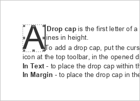
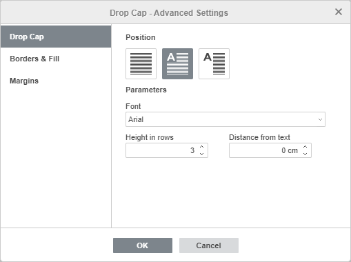
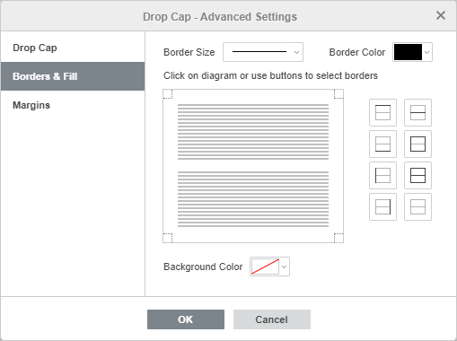
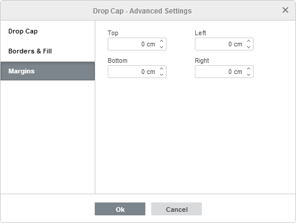
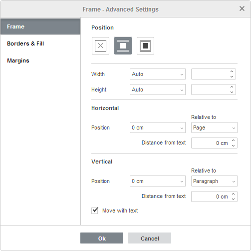

Umetni inicijal
Inicijal je veliko početno slovo koje se koristi na početku pasusa ili odeljka. Veličina inicijala obično zauzima nekoliko redova.
Da biste dodali inicijal u Uređivaču dokumenata,
- postavite kursor u željeni pasus,
- pređite na karticu Umetni na gornjoj traci sa alatkama,
- kliknite na ikonu Inicijal na gornjoj traci,
- u otvorenoj padajućoj listi izaberite opciju koja vam je potrebna:
- U tekstu – da postavite inicijal unutar pasusa.
- U margini – da postavite inicijal u levu marginu.

Prvi znak izabranog pasusa biće pretvoren u inicijal. Ako želite da inicijal obuhvati još nekoliko znakova, dodajte ih ručno: izaberite inicijal i otkucajte dodatna slova.Da biste prilagodili izgled inicijala (npr. veličinu fonta, tip, stil dekoracije ili boju), izaberite slovo i koristite odgovarajuće ikone na kartici Početna na gornjoj traci.
Kada je inicijal izabran, on je okružen okvirom (kontejnerom koji se koristi za pozicioniranje inicijala na stranici). Možete brzo promeniti veličinu okvira prevlačenjem njegovih ivica ili promeniti njegov položaj pomoću ikone koja se pojavljuje kada pređete mišem preko okvira.
Da biste obrisali dodati inicijal, izaberite ga, kliknite na ikonu Inicijal na kartici Umetni i odaberite opciju Bez iz padajuće liste.
Da biste prilagodili parametre dodatog inicijala, izaberite ga, kliknite na ikonu Inicijal na kartici Umetni i izaberite opciju Podešavanja inicijala iz padajuće liste. Pojaviće se prozor Inicijal – Napredna podešavanja:

Kartica Inicijal omogućava podešavanje sledećih parametara:
- Položaj se koristi za promenu mesta inicijala. Izaberite opciju U tekstu ili U margini, ili kliknite na Bez da obrišete inicijal.
- Font se koristi za izbor fonta sa liste dostupnih fontova.
- Visina u redovima se koristi da se definiše preko koliko redova će se protezati inicijal. Moguće je izabrati vrednost od 1 do 10.
- Razmak od teksta se koristi da se odredi količina razmaka između teksta pasusa i desne ivice okvira inicijala.

Kartica Okviri & popuna omogućava dodavanje okvira oko inicijala i podešavanje njegovih parametara. Oni su sledeći:
- Parametri okvira (debljina, boja i prisustvo ili odsustvo) – podesite debljinu okvira, izaberite boju i odaberite ivice (gornja, donja, leva, desna ili njihova kombinacija) na koje želite da primenite ova podešavanja.
- Boja pozadine – odaberite boju pozadine inicijala.

Kartica Margine omogućava podešavanje razmaka između inicijala i gornje, donje, leve i desne ivice okvira (ako su okviri prethodno dodati).
Kada je inicijal dodat, možete promeniti i parametre okvira. Da biste im pristupili, kliknite desnim tasterom unutar okvira i izaberite opciju Napredna podešavanja okvira iz menija. Otvoriće se prozor Okvir – Napredna podešavanja:

Kartica Okvir omogućava podešavanje sledećih parametara:
- Položaj se koristi da se izabere stil obuhvatanja U ravni teksta ili Tok. Takođe možete kliknuti na Bez da obrišete okvir.
- Širina i Visina se koriste da se promene dimenzije okvira. Opcija Auto omogućava automatsko prilagođavanje veličine okvira inicijalu. Opcija Tačno omogućava zadavanje fiksnih vrednosti. Opcija Najmanje se koristi za postavljanje minimalne visine (ako promenite veličinu inicijala, visina okvira se menja u skladu s tim, ali ne može biti manja od zadate vrednosti).
- Horizontalni parametri se koriste ili da se postavi tačan položaj okvira u izabranim jedinicama mere u odnosu na marginu, stranicu ili kolonu, ili da se okvir poravna (levo, centar ili desno) u odnosu na jednu od ovih referentnih tačaka. Takođe možete podesiti horizontalni Razmak od teksta, tj. razmak između vertikalnih ivica okvira i teksta pasusa.
- Vertikalni parametri se koriste ili da se postavi tačan položaj okvira u izabranim jedinicama mere u odnosu na marginu, stranicu ili pasus, ili da se okvir poravna (gore, centar ili dole) u odnosu na jednu od ovih referentnih tačaka. Takođe možete podesiti vertikalni Razmak od teksta, tj. razmak između horizontalnih ivica okvira i teksta pasusa.
- Pomeraj sa tekstom se koristi da bi okvir pratio pasus uz koji je vezan.
Kartice Okviri i ispuna i Margine omogućavaju podešavanje istih parametara kao i odgovarajuće kartice u prozoru Inicijal – Napredna podešavanja.